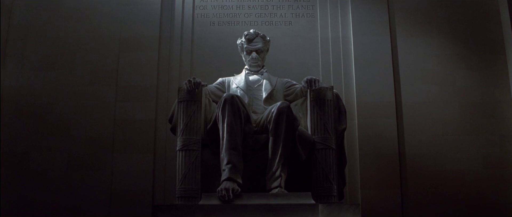
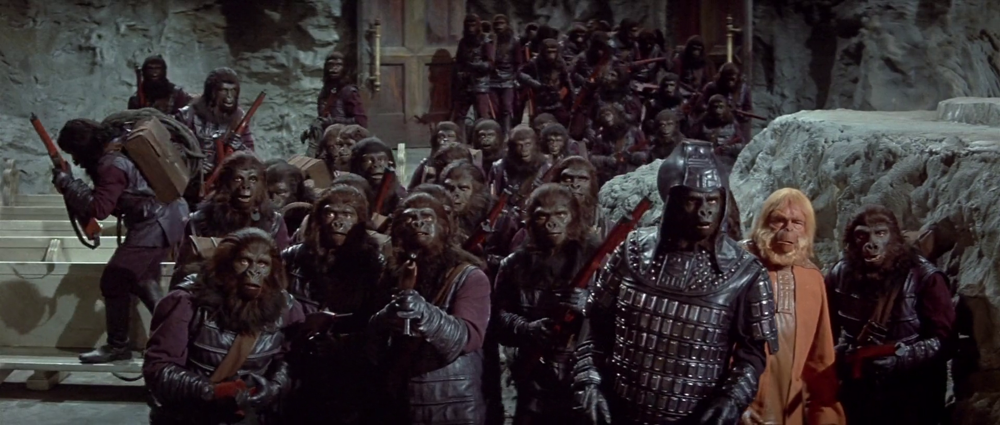

This abrupt ending is the sort of nihilistic tone by way narrative mechanic I wanted to emphasise. All the old Planet of the Apes films are basically like this. They follow a pattern that works without being overly formulaic. Each movie understands how to use the premise of Apes having taken over the planet to explore a conflict between two imperfect world views, and the trademark move of the franchise is to escalate the threat this unresolved tension represents - up to, and including, within the final few minutes of the film itself.
Some of the later Seventies movies get a little bit schlocky, but they still work. Since Beneath the Planet of the Apes ends with the extinction of all life on the planet, Escape from-, Conquest of- and Battle for the Planet of the Apes had to be prequels, and ended up invoking a bit of time-travel here and there. But, still, all three latter movies still all basically work as both standalone stories and when viewed as a successive series of installments of a narrative being told about one world. Incidentally, even with the time-travel shenanigans in these installments, I think its a bold and apt choice that ultimately the prequels still don't stray away from the franchise's prior pessimistic outlook. They imply that anyone - Man, Ape, or otherwise - will still be fundamentally powerless to prevent or avert the inevitable nuclear apocalypse come the end of Beneath.
While I'm being thorough on the topic, I might as well also at least briefly digress to acknowledge the 2001 Tim Burton-directed Planet of the Apes one-off reboot. I don't want to spend too much time on it, because it's not one of the classic films or part of the new reboot films I specifically want to critique here. But, - disappointing as it may have been - I think it's still worth mentioning that I appreciate it's effort to explore the themes of the original films and the book while playing around with the premise in a different way.
It suffers a lot from some cheesy early-Two-Thousands performances and design choices, but it's a decent self-contained little project. Burton obviously is a competent and experienced director who had a distinct idea in mind for how he wanted to shoot his remake. Plus, I shamelessly enjoy a lot of the cheesy little nods to the original he includes, like recontextualising the "get your paws off me line" and giving that dialogue to an Ape. Also, the scene at the end where protagonist Mark Wahlberg comes face-to-face with an Ape version of the Lincoln Memorial is oft-derided as kinda dumb, but I must point out that scene was actually more or less lifted from the 1963 novel, funnily enough.

"Ape Lincoln". This is quite arguably the most directly-lifted scene from the original book to ever appear in any Planet of the Apes movie, believe it or not.
I bothered giving all those examples of how the Planet of the Apes franchise had previously embodied such a strong core thematic and narrative identity, so I could now start to get into why I would argue the most recent films in the franchise have unfortunately strayed significantly from those strengths.
I will preemptively say, the most recent Apes series - which began with 2011's Rise of the Planet of the Apes - are nice enough in their own right, in several respects, and do certainly a lot right in some ways. A lot of the cinematography and how individual scenes are framed and shot is really good. The actors' performances generally come across well, and in particular, the motion-capture performers and the CGI technicians or whoever who animated the photo-realistic monkeys all did a fantastic job there. And, as I understand it, these reboot movies were all made on a relatively low budget for big blockbuster movies these days, and I suppose that's always to be commended.
But, as standalone stories, or when viewed as a continuation or successor to the classic Planet of the Apes movies - these reboot films' single biggest flaw is that there is never any ideological conflict, and very little of the escalating conflict dynamic the older movies captured. There may be individual good guys, and good apes, who fight individual bad guys and bad apes, but there is no narrative arc in which any two or more properly articulated viewpoints ever come into conflict or oppose one another in any meaningful way. Arguably worse, the reboot films consistently opt not to go for any big, bold, shocking reveals or revelatory twists. Not every single film needs, or would even necessarily benefit, from that sort of plot element being included of course - but it's the sort of move you really do want to see pulled out at least once for the franchise that practically invented the last-minute shock reveal and became iconic for doing them.
The first reboot film - Rise of the Planet of the Apes - is probably the strongest of the newest films. The basic plot involves the first of the intelligent Apes being 'created' in a genetic research facility as the result of a man-made virus. The monkeys aren't treated all that well, and eventually they all breakout - setting up the eventual downfall of human society we'll see in its two sequels. I don't think there's anything inherently wrong with trying to take the franchise is a more overtly "realistic" 'hard' sci-fi direction - but the problem is that the film never really substantively ties its plot into any social critique.
There are definitely unlikable individual characters, and we're meant to sympathize with the captive research Apes. But there is no 'good worldview' and 'bad worldview' we're supposed to take any sort of message out of seeing come into conflict. The core value of the Planet of the Apes series hitherto was always the changing of society for the worse, and the militant backlash to that change which invariably leads to even more terrible outcomes.
You don't even need to be overly cynical to make a story like that, either - all the classic films' protagonists were those who essentially tried their best to keep things stable and as peaceful as possible. And even if they didn't often succeed in doing that - they were still shown to be in the right to try. In Rise, the monkey apocalypse happens essentially just because this is a franchise that needs to have a monkey apocalypse happen.
For all its faults, again, it is an interesting take on the premise of how the Apes become intelligent - and taken as the first in a planned trilogy of films (or, perhaps even more down the line) that could have then explored the classic themes of the series, it would have been a good way to establish everything we'd need to know. Unfortunately, the next couple new Apes movies that followed didn't really live up to that potential in the end either.
In any case, the second reboot film - 2014's Dawn of the Planet of the Apes - jumps the plot ahead ten years and shows us how clustered communities of intelligent Apes have begun to form, while the man-made illness that caused them to become intelligent has also drastically reduced the human population. The film sets up that there's a pocket of human survivors adjacent to the main Ape camp. And had the screenplay gone in a different - read: better - direction, the plot could have focused on that as a source of tension.
Unfortunately, what we ended up getting was that this whole potential storyline basically just peters out, while the movie focuses more on interpersonal quibbling between forgettable, unsympathetic, uninteresting, Human characters who are contrived to argue with one another and needlessly jeopardize the fragile state of peace between the Human and the Apes for no well-written reason. The climax of the film ends up becoming a CGI slap-fight between the original leader of the Apes, Caesar, and a bonobo named Koba who wants to usurp leadership and attack the humans.
If the majority of the plot had just been Ceasar and Koba clashing with one another about the ethics and feasibility of attacking the human community - that could have been a great Planet of the Apes story. Unfortunately, two-thirds of the movie's runtime was given over to the human B-plots, presumably just to make things more palatable to audiences. Flashy action and characters who can actually talk will be more engaging for most moviegoers, I suppose. But it's still unfortunate that Koba or a character like him wasn't given a decent amount of time on-screen in service of even just giving a protagonist Ape like Caesar a clearly articulated set of antagonistic beliefs to push against.
There is no meaningful narrative arc here. There is no tension. No sense of inevitable looming conflict. No genuine moral dilemma weighing on the characters. No grand finale. Not every movie necessarily needs the biggest, boldest, storyline - but, realistically, if you hoping to re-do the classic Planet of the Apes films you do need more than just "here are some Apes - and eventually a computer-generated action scene might happen".
Dawn of the Planet of the Apes also unfortunately suffers from needing to set up its own sequel too, so we end up with all the potential conflict plot-lines from the Human-Ape adjacent societies situation left up in the air by the time the credits roll. And not in a way that feels tense, or that gets the audience invested in what will happen next, - but in a way that's frankly at risk of leaving the viewer feel like they've wasted two hours.
So, two movies into this reboot, there hasn't been much of a meaningful narrative, there hasn't really been all that much ideological conflict, and we haven't gotten any of the series' trademark big shock twist reveals yet either. Still, going into the third (and once-presumed final) of the reboot Apes movies - 2017's War for the Planet of the Apes - I still think the potential was there to stick the landing, so to speak.
The plot of War picks up a few years after the events of the prior film, and we get two major story developments. One: that there is a now a heavily armed Human militia going around systematically and proficiently attempting to exterminate all the intelligent Apes. And two: that the Apes themselves are now on the backfoot and looking to get away from this militia.
This is the closest we get to seeing two conflicting ideological positions competing during any of the reboot movies. And while the remaining Apes and the militia-aligned Humans don't directly interact all that much throughout the movie, the juxtaposition of showing what each side is doing from scene to scene does go a ways towards giving us that sort of ideological back-and-forth.
On the Ape side, Caesar and his efforts to safely relocate his community, while sympathetic and noble to an end, also represent the continuing transition from society as it once was, to a world more inherently hostile to Man. On the militia side, they've got their own leader - Woody Harrelson playing a gruff military colonel stereotype. Harrelson is a decent foil to the Ape's ambitions; he's ruthless and pragmatic and embodies the militant response to social upheaval.
Around the art of the movie's third act, Harrelson's colonel is in the same room as Caesar and lays his position right on the table. It's not at all subtle, but at least we do at least get a sense of his motivations - unlike, say, those of Koba in the previous film. Bloodthirsty as he frequently comes across, Harrelson does have a real, reasonable interest in exterminating the Apes and thereby, the disease they spread. This scene also reminds everyone watching about the whole degenerative man-made disease subplot established in the previous two films. Which is helpful, but, as I'll elaborate on below - I believe this is also an element of the story the films' creators failed to use to its fullest potential.
As the movie starts wrapping up, Caesar recognises the inevitability of open conflict between the Apes and the militia and begins to ready an attack. The colonel, Harrelson, realises that he's showing the symptoms of the Apes' disease and ends up taking his own life. And the finale ends up being a big gunfight in which, despite being vastly out-numbered and out-gunned, the Apes end up being able to use some explosives to cause a avalanche to wipe out all the militia troops.
I think it's a weak ending. Mainly because it largely throws away the interesting dynamic between the two competing moral stances on display in favour of essentially just giving the more sympathetically-framed Apes a quick and uncomplicated victory where they can ride off into the sunset free. The problem is that - for one thing - it means the last two movies were just a lateral move. The situation the Apes are in once the credits roll here might as well be where they were at the end of the first reboot film.
The finale ends up turning Harrelson's character - and by extension, everyone in his militia, - into just another generic villainous force opposite Caesar, rather than giving any of the Humans a more compelling morally grey antagonist role. Arguably worse still, they also neglected the trademark Planet of the Apes shock reveal. The whole avalanche-saves-the-day thing isn't so much a shocking twist as it is a deus ex machina, an easy way to just end the story.
I can't say that the ending of War for the Planet of the Apes doesn't seem like it fits in with the rest of the 2011-and-onwards reboot films. But that's because the same pitfalls this movie is let down by are the same ones that prior two films also ended up succumbing to. Which I think is a shame. I like the classic movies and the novel and the premise they're all based off of - it's just that, if we're getting modern remakes of them, it would have been nice to get stronger films. It would have been nice if this reboot was tonally and narratively more in line with the original films, rather than largely being something more akin to decent, but generic, monkey-themed action movies.
Enjoyable enough as they are, I think a lot of Apes fans - myself certainly included - were simply expecting something different from these new movies. Something a bit more conceptual, or interested in presenting an ideological or philosophical proposal to grapple with. For all the inherent absurdity that comes with the premise of being about a militant post-apocalyptic monkey society, Planet of the Apes is a remarkably dry, contemplative, Human story.
All that said, even as I was personally watching War for the Planet of the Apes for the first time, I still felt like this third reboot movie had the potential to deliver a story and pull off an ending befitting this franchise. Let's say, hypothetically, I was in the position of writing and directing the War for the Planet of the Apes. Even assuming I had to use the same cast of characters, the same setting, the same basic premise, and couldn't do anything unreasonable budget-wise - what would I, as someone who has a lot of opinions about these movies, have changed?
Keep the first third of the film roughly the same. Give us time to establish where the Apes are, why they're starting to come into open conflict with human militia, and make sure to give us that scene juxtaposition where we get to see the viewpoint of both Caesar and Harrelson's colonel. Move the face-to-face confrontation between Harrelson and Caesar closer to about the half-way mark of the movie's total runtime. From there, have the Human militia and the Apes fight a bit - this can be where we get the big action scenes that modern audiences apparently want. And by and large, have the militia win. Show Ape causalities, show Apes captured, show them breaking ranks and running away. You could even go so far as to have Caesar himself be caught or killed here.
Towards the final third of the film would be where, again, you use the idea that Harrelson ends up realising he's got the degenerative Ape disease - even if, you want to have had him and his militia have killed virtually all of the intelligent Apes by then. The movie already established that the symptoms of this disease in humans was muteness, diminished mental capacity, and aggression. So I would have had the movie end up with the entire human militia movement becoming a pack of primitive tribalistic people. You could even have that be the explanation as for why this otherwise disciplined military commander was acting so tersely and belligerently the whole movie.
The first time I ever saw these reboot films, - perhaps I was just been getting my own hopes up - but this is what I genuinely thought was being foreshadowed the first time the disease plot-point was brought up. I honestly wanted, and half-expected, to see that these militia guys literally end up becoming the Ape-People we know from the classic Sixties and Seventies films. I would have had the disease begin to gradually turn the remaining Humans into what we see inhabiting the Ape society in the 1968 movie.
I think it's a reveal that would have fit the franchise. And after all, it does make a lot of thematic sense, and it's not like it contradicts any of the 'established canon', for what it's worth. The Apes in the 1968 movie don't look like photorealistic monkeys, like Caesar and company do in the reboot movies. They look more like devolved people - they walk upright bipedally, and all speak English, and wear clothes, and carry guns.
Again, the message of the novel, as well as all the original films, isn't that a dominant society can be simply replaced outright by another. It's that a society can be itself transformed and damaged by reactionary militarism. Pierre Boulle knew that the Nazis weren't an external treat to Europe's social order, they didn't come from elsewhere; they were European, the threat they posed was internal and began within Europe's social order.
I think the reboot Apes movies would have been fantastic, if by the end they connected them to the classic movies - but in a way that shockingly subverted everything we were expecting about where the "Ape uprising" plot was leading. For instance, if the intelligent monkeys we've been following the story of since 2011 were in fact not the progenitors of the far-future Ape species of the original films - but more like a sort of dialectical stepping-stone on the way to Humanity itself becoming the hostile civilisation Charlton Heston encounters in the original Planet of The Apes. I simply think an ending like this - at least in tone, if not exact specifics - would have been much more satisfying to fans of the series hoping for a narrative more in-line with what we've come to expect from this franchise.

Do the original films' Apes not truly look more like devolved, militarised, Humans than merely upright chimpanzees?
NOTE: This piece was originally written years prior to the release of 2024's Kingdom of the Planet of the Apes - and obviously without any knowledge of that film's plot or direction - largely under the assumption that War for the Planet of the Apes would remain the final film in a rebooted Apes trilogy. If the series is to be continued in the relatively-near term, then I remain tentatively optimistic the filmmakers may still yet deliver a more satisfying, and 'traditional', Planet of the Apes movie eventually.
last major update: May 2026